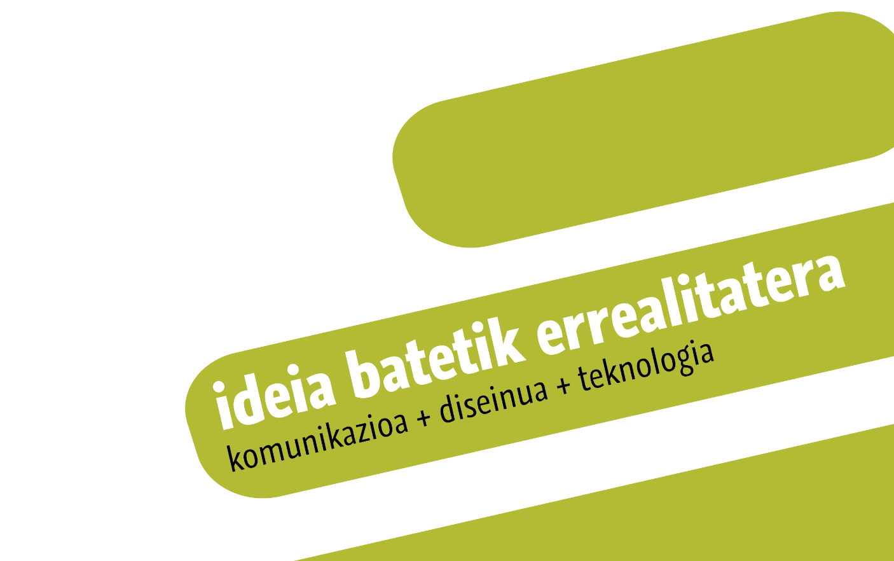
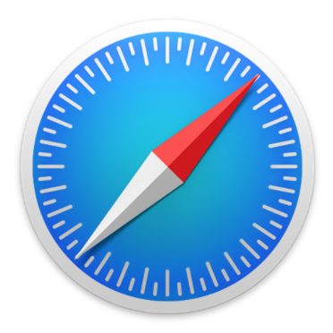
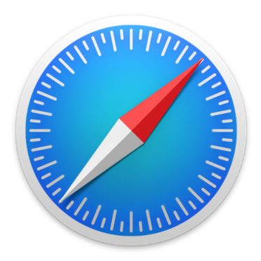
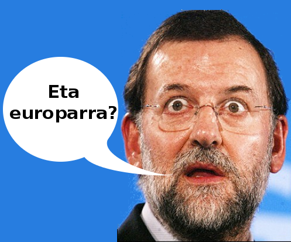
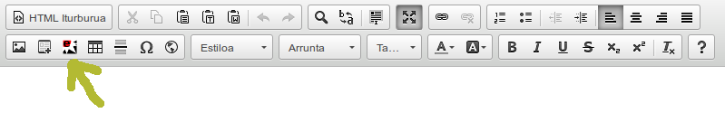
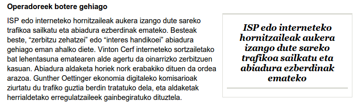
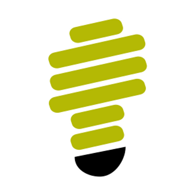
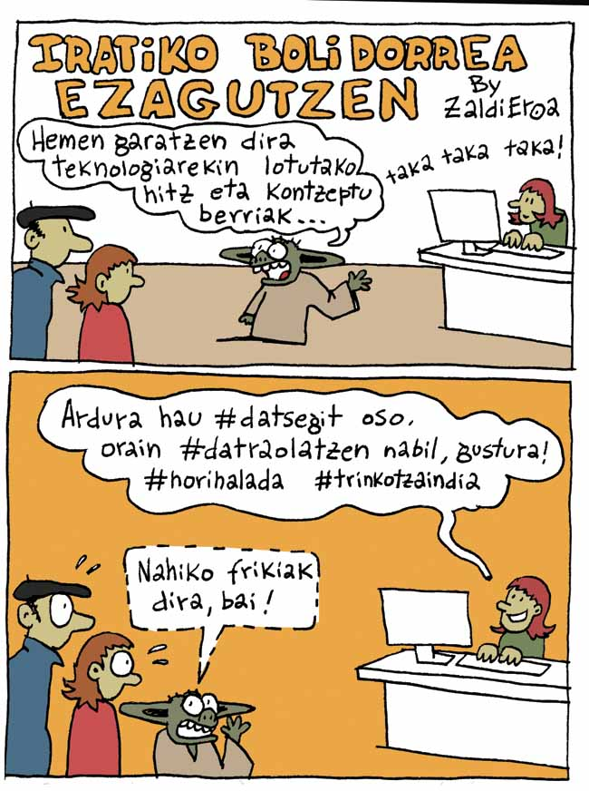
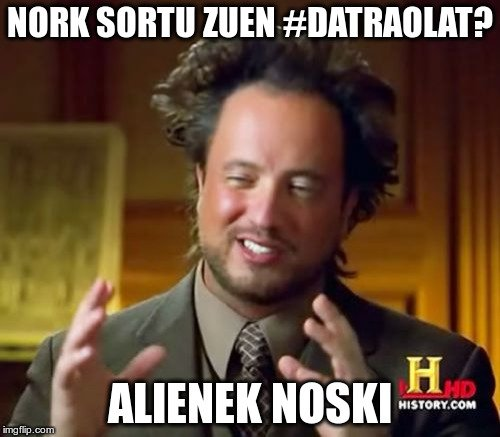

#datraolat
traolak eta erabiltzaile-izenak naturalago
Asier Iturralde Sarasola @aldatsa
Durangoko Azokako Kabi@ gunea
2015-12-05
Zer da #datraolat?
Euskal txiolariei Twitterren traola eta erabiltzaile-izenak modu naturalago batean deklinatzeko aukera ematen dien Firefox, Chrome eta Safari nabigatzaileetarako gehigarria

 

Twitter-en eztabaida
Zer erabili behar litzateke traola eta erabiltzaile-izenak deklinatzeko?
| Marra bertikala | #euskarabildua|ren |
| Marratxoa | #euskarabildua-ren |
| Zuriunea | #euskarabildua ren |
| Puntua | #euskarabildua.ren |
| Apostrofoa | #euskarabildua'ren |
| Tileta | #euskarabildua~ren |
| ... |
Marra bertikalaren aldekoak
Oraindik konturatu ez bazara, hitzak @Twitter|en banatzeko dotoreagoa da #marra|ren erabilera, #gidoi-ak jarri baino.
— Iñaki Larrañaga (@InakiLarra) October 24, 2015Marratxoaren aldekoak
@InakiLarra ba nei gidoia gehio gustatze zait...
— Aiora (@probatxoa) October 24, 2015Zuriunearen aldekoak
@InakiLarra Bada nik ez bata ez bestea, hutsuneak jartzen ditut irakurketa argiagoa izan dadin. @zaldieroa k hitzegin du.
— P.Huarte Larraburu (@zaldieroa) October 25, 2015Puntuaren aldekoak
@zaldieroa @InakiLarra Ba niri marra horrek dezente zailtzen dit dit irakurketa. @xagra.k nahiago puntua
— xagra (@xagra) October 25, 2015Apostrofoaren aldekoak
Niri apostrofea iruditzen zait estetikoki txukunena, eta horixe erabiltzen dut beti. @ielortza @makilipurdi @probatxoa @txerren @InakiLarra
— Aitor Abaroa (@abaroa37) October 26, 2015Tiletaren aldekoak
@teketen @kokoteko @InakiLarra @probatxoa Twitter~eko estetek bertze hau ~ nahiago dute #marra|rik ez,#godoi-rik ez, #bibote~a
— Santi Leoné (@ororostorm) October 25, 2015Eta seguru badagoela beste aukeraren bat erabiltzen duen norbait
Inkestak egiten hasi ziren txiolariak
@kokoteko @InakiLarra @probatxoa Gidoia++, |-k esanahi zehatz bat du informatikan (pipe). Gidoia beti erabili dugu.
— Gorka Julio (@teketen) October 25, 2015Bon, bon... Zezenari adarretatik. Euskal txiolariok, gahaltezen eta bozkagun: marra | ala gidoia -
— Igør (@ielortza) October 25, 2015Nondik dator #datraolaten ideia?
Mikko Hypponen-en txioa
Now explain to me why the "Wed" part of "Wednesday" was highlighted in my previous Tweet. pic.twitter.com/Vxyskj1kaN
— Mikko Hypponen (@mikko) May 28, 2014ARGIA.eus-eko CKEditor-eko plugina
 Bonbila piztu
Konponbidea ala eztabaida areagotu
Lizentzia: CC-BY-NC 2.5
Garapena
Firefox, Chrome eta Safari-rako gehigarriak JavaScript erabiliz sortzen dira.

JavaScript alde guztietan
Nabigatzailean, zerbitzarietan (Node.js), mugikorrerako aplikazioetan (Cordova, Appcelerator Titanium...), mahaigaineko aplikazioak (NW.js, Electron...), nabigatzaileen gehigarriak...

Lehen txioa
@iametzan @aldatsak garatutako #datraolatekin traolak eta erabiltzaile-izenak naturalago https://t.co/lQlM3URJb5 pic.twitter.com/A001dbnmUK
— Elisabeth Pombo (@epombo) October 26, 2015Harrera
Laster zabaldu zen berria euskal txiosferan
Ei, @InakiLarra: begira @epombo-k nola lortu duen gidoi eta barra barik aipamen bat egitea #FlipetanKoloretan :D https://t.co/XzfG3kwiIe
— Gorka Bereziartua (@boligorria) October 26, 2015Ondo egin badut @iametzaren #datraolaten gehigarria ondo instalatu dut. Eta orain, zer egin behar dugu #marra #gidoi eta #apostrofeekin?
— txerren (@txerren) October 26, 2015Ze interesgarria #datraolaten gehigarria! Amaitu dira gidoitxoa ala marra dikotomia! eskerri asko @iametzari
— leire narbaiza arizm (@txargain) October 27, 2015#datraolat datsegit eta darabilt https://t.co/in5wjV3Utu
— uiturriaga (@uiturriaga) October 29, 2015Ez dakit zer esango luketen Wittgenstein edo Oteizak #Datraolateri buruz: hutsunea ez den espazioa, elkartzen duen tartea...#zerowidthspace
— Edorta Amurua (@makilipurdi) October 27, 2015AEKren Aizu! aldizkarian
0.2.0 bertsioan hobekuntzak
- Safarirako bertsioa
- Webgune gehiagotan erabiltzeko aukera
- Tweetdeck
- Github
- Gitlab
- ...
Arazo ezaguna: Facebook
Software librea
GPLv3 lizentzia
Iturburu-kodea
Etorkizunera begira
Hurrengo bertsioan: laster-teklak
@aldatsaren #datraolat probaten, laster-teklie faltan, al' bada bakotzak gudauena imintzekue ;)
— zital (@ZiTAL) October 29, 2015Eta mugikorretan?
Gozada bat da #datraolatarekin idatzi ahal izatea, baina oso gutxitan idazten ditut nik txioak #Twittereko webgunetik. Mlskr @iametsa!
— Maite Goñi Eizmendi (@euskaljakintza) October 27, 2015Laster History Channel-en...
Galderak
Fragments
Hit the next arrow...
... to step through ...
... a fragmented slide.
Fragment Styles
There's different types of fragments, like:
grow
shrink
fade-out
current-visible
highlight-red
highlight-blue
Transition Styles
You can select from different transitions, like:
None -
Fade -
Slide -
Convex -
Concave -
Zoom
Themes
reveal.js comes with a few themes built in:
Black (default) -
White -
League -
Sky -
Beige -
Simple
Serif -
Blood -
Night -
Moon -
Solarized
Slide Backgrounds
Set data-background="#dddddd" on a slide to change the background color. All CSS color formats are supported.
Image Backgrounds
<section data-background="image.png">Tiled Backgrounds
<section data-background="image.png" data-background-repeat="repeat" data-background-size="100px">Video Backgrounds
<section data-background-video="video.mp4,video.webm">... and GIFs!
Background Transitions
Different background transitions are available via the backgroundTransition option. This one's called "zoom".
Reveal.configure({ backgroundTransition: 'zoom' })Background Transitions
You can override background transitions per-slide.
<section data-background-transition="zoom">Pretty Code
function linkify( selector ) {
if( supports3DTransforms ) {
var nodes = document.querySelectorAll( selector );
for( var i = 0, len = nodes.length; i < len; i++ ) {
var node = nodes[i];
if( !node.className ) {
node.className += ' roll';
}
}
}
}
Code syntax highlighting courtesy of highlight.js.
Marvelous List
- No order here
- Or here
- Or here
- Or here
Fantastic Ordered List
- One is smaller than...
- Two is smaller than...
- Three!
Tabular Tables
| Item | Value | Quantity |
|---|---|---|
| Apples | $1 | 7 |
| Lemonade | $2 | 18 |
| Bread | $3 | 2 |
Clever Quotes
These guys come in two forms, inline:
“The nice thing about standards is that there are so many to choose from”
and block:
“For years there has been a theory that millions of monkeys typing at random on millions of typewriters would reproduce the entire works of Shakespeare. The Internet has proven this theory to be untrue.”
Intergalactic Interconnections
You can link between slides internally, like this.
Speaker View
There's a speaker view. It includes a timer, preview of the upcoming slide as well as your speaker notes.
Press the S key to try it out.
Export to PDF
Presentations can be exported to PDF, here's an example:
Global State
Set data-state="something" on a slide and "something"
will be added as a class to the document element when the slide is open. This lets you
apply broader style changes, like switching the page background.
State Events
Additionally custom events can be triggered on a per slide basis by binding to the data-state name.
Reveal.addEventListener( 'customevent', function() {
console.log( '"customevent" has fired' );
} );
Take a Moment
Press B or . on your keyboard to pause the presentation. This is helpful when you're on stage and want to take distracting slides off the screen.
Much more
- Right-to-left support
- Extensive JavaScript API
- Auto-progression
- Parallax backgrounds
- Custom keyboard bindings